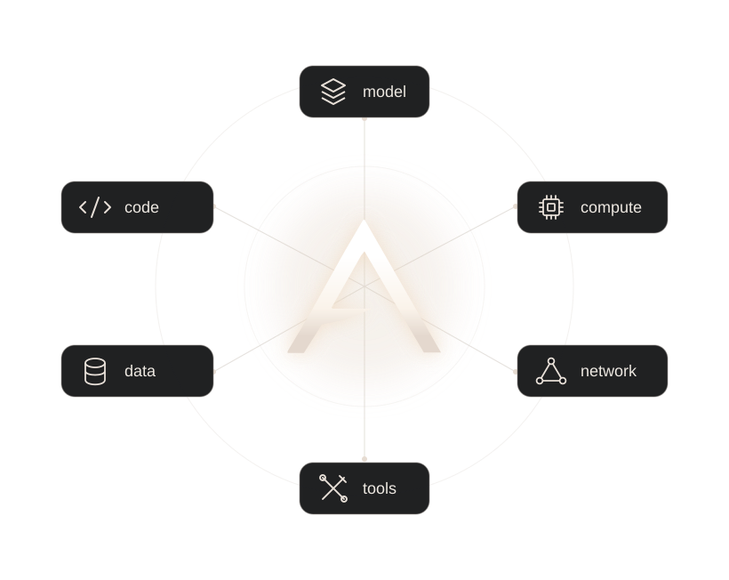

INDEPENDENT AI DEVELOPMENT
An assistant that goes beyond answers.
AEGIS is an AI agent project built to bring conversation, practical tools, and everyday workflows together. We're developing our own language model as one part of that foundation.
Early-stage research and development · Not yet publicly available
